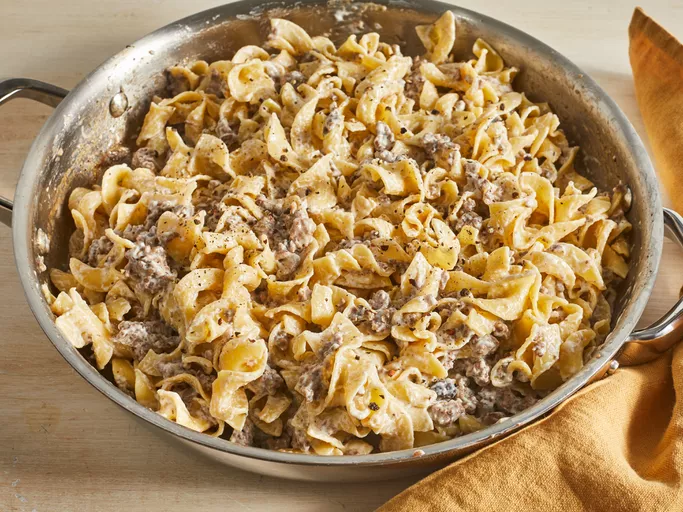

Beef Stroganoff

Description
This is an iconic Russian dish that consists of beef in a creamy sauce. This dish is often made with mushroom and served over rice or egg noodles
Ingredients
- 1 pound ground beef
- 8 ounces package egg noodles
- 10.5 ounces can fat-free condensed cream of mushroom soup
- 1 tablespoon garlic powder
- 1/2 cup sour cream
- salt and ground black pepper
Steps
- Gather ingredients
- Sauté ground beef in a large skillet over medium heat until browned and crumbly; 5 to 10 minutes
- Meanwhile, fill a large pot with lightly salted water and bring to a rapid boil. Cook egg noodles at a boil until tender yet firm to the bite, 7 to 9 minutes. Drain and set aside
- Drain and discard any fat from the cooked beef. Stir condensed soup and garlic powder into the beef. Simmer for 10 minutes, stirring occasionally
- Remove beef from the heat. Add egg noodles and stir to combine. Stir in sour cream and season with salt and pepper
- Serve and enjoy!
Home